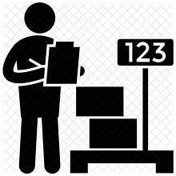
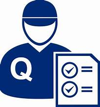

Sales Manager
A sales manager leads and motivates the sales team to achieve revenue targets and drive business growth.
More Details
1 open positions
Product Manager
A product manager oversees the development and strategy of a product, ensuring it meets market needs and aligns with the company's goals.
More Details
0 open positions

Inventory Manager
An inventory manager oversees inventory levels to ensure efficient supply chain operations.
More Details
2 open positions

Quality Control Manager
A quality control manager ensures that products or services meet established standards by implementing quality assurance processes and procedures.
More Details
4 open positions
Human Resources Manager
A human resources manager oversees recruitment, employee relations, benefits administration, and compliance with labor laws to support organizational growth and employee well-being.
More Details
1 open positions
Marketing Manager
A marketing manager drives sales and brand awareness through strategic planning, campaign execution, and market analysis.
More Details
3 open positions